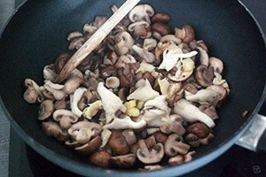
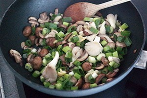
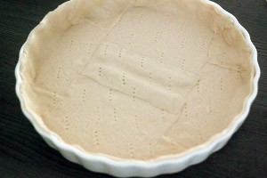
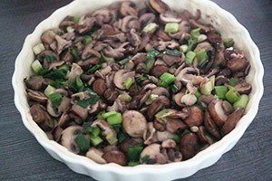
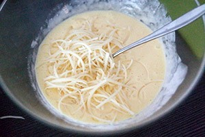
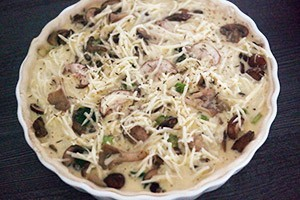

Een quiche is een hartige open taart, meestal gemaakt met een zanddeegbodem van bloem, water en boter. De vulling bestaat uit een luchtig opgeklopte mix van eieren en room. Hier worden dan vervolgens nog groenten, vlees of vis en meestal ook kaas aan toegevoegd. Quiche wordt meestal warm, maar ook wel afgekoeld opgediend. De meest bekende quiche is de Quiche Lorraine, waarbij spek en kaas de hoofdingrediënten vormen. Een Quiche Alsacienne is een Quiche Lorraine met ui. Tarte flambée (Duits: Flammkuchen) is een met Quiche vergelijkbaar product, al lijkt Tarte flambée meer op pizza. Quiche is afkomstig uit Lotharingen, wisselend een Duitse of een Franse streek. De verfranste naam is afgeleid van een woord uit de streektaal dat verwant is aan het Duitse woord Kuchen (koek). bereidtijd 40 MIN + 35 oventijd. aantal persoonen 3.
Verwarm de oven op 180 graden. Laat de velletjes deeg ontdooien. Verhit ondertussen de olie in een pan en bak de champignons 5 min op middelhoog vuur. Voeg de paddestoelen toe en bak nog een paar minuten totdat ze wat zijn geslonken en het vocht grotendeels verdwenenen is.    Hak de bosui in ringetjes en bak nog een minuutje mee met de paddestoelen en champignons. Breng op smaak met tijm en een snuf peperen zout. Vet de quichevorm in met boter. Bekleed de vorm met de velletjes deeg en maak de naden goed aan elkaar vast.    Prik met een vork wat gaatjes in het deeg en bestooi met paneermeel. Laat het paddestoelenmengsel uitlekken op een keukenpapiertje en doe daarna in de quichevorm. Klop de eieren, slagroom en kaas door elkaar. Giet het mengsel over de paddestoelen en verdeel alles mooi. Zet de quiche ongeveer 35 min in de oven. Controleer of hij goed gaar is. Serveer met een handje rucola in het midden.